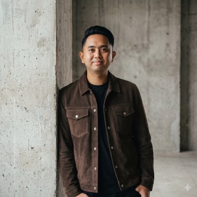
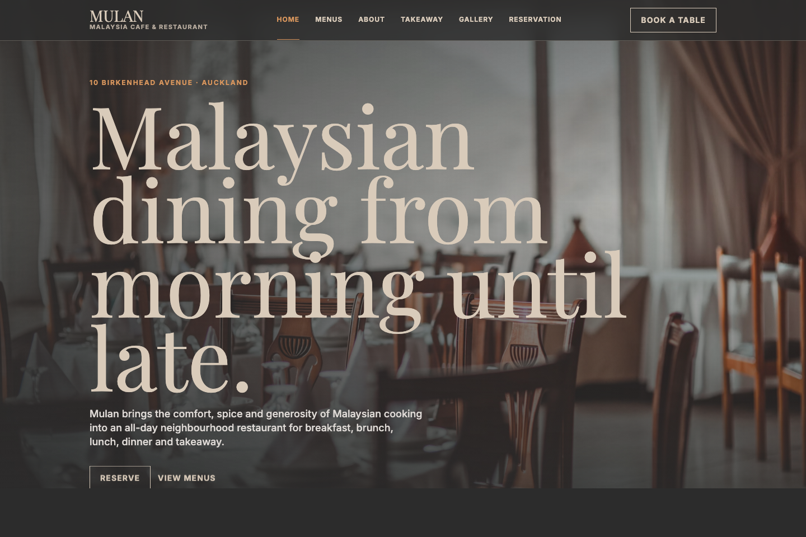
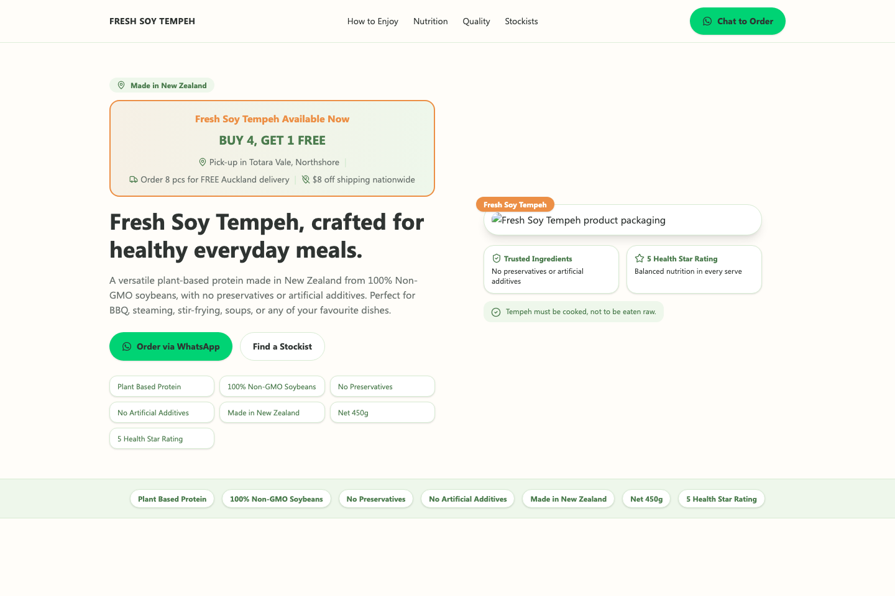
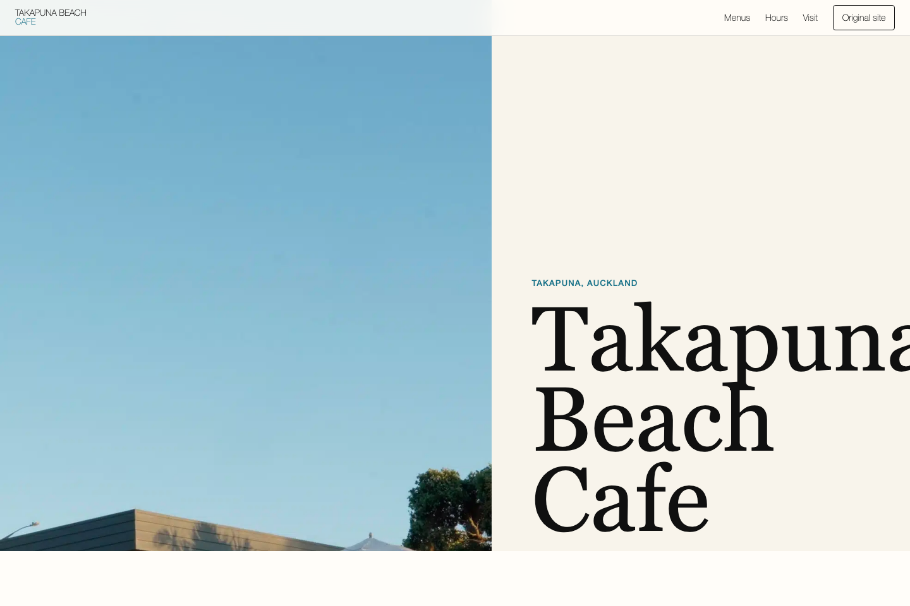

Keeping the shift moving.
Staff rosters, service briefings, opening and closing routines, stock orders, and guest complaint handling.
Restaurant experienceBased in Malang, Indonesia
I'm Ridho — a hospitality professional with restaurant management experience, international cruise service, and a Master of Management from New Zealand.
Restaurant & outlet operations
F&B supervision · Guest experience

ICL Graduate Business School, Auckland · Certified 2026
Warunk Laseman · AIDA Cruises · New Zealand hospitality
At a glance
Hands-on service experience, supported by management education and practical digital skills.
Staff rosters, service briefings, opening and closing routines, stock orders, and guest complaint handling.
Restaurant experienceGuest-facing work across Indonesian restaurants and hotels, international cruise hospitality, and New Zealand dining.
International experienceWebsite projects and digital marketing experience add a practical understanding of menus, bookings, and online enquiries.
Explore digital projectsSelected experience
Experience from the restaurant floor to managing a small service team.
View experienceWarunk Laseman
Supervised approximately seven staff, coordinated rosters and training, managed supplier orders, and handled day-to-day service issues.
AIDA Cruises
Worked in international dining service and supported AIDAaura's post-COVID reopening, with a focus on guest service and food safety routines.
Mulan Restaurant
Delivered guest-facing restaurant service in a multicultural hospitality environment.
An additional perspective
Selected website projects show how I organise information around the decisions customers need to make.


Product landing page
Product information, stockist discovery, and a direct WhatsApp order path.

Hospitality website rebuild
A waterfront cafe experience organised around menus and visit planning.
Explore the project pages for the customer need, my contribution, and the visible output.
Let's talk about your team
Share the role, location, and what your team needs.